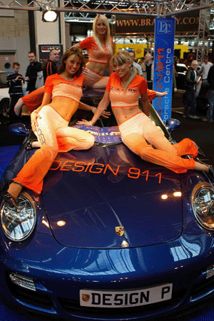

Sport/Footmagazine - Toujours le foot en tête!
 Rubriques Home Zone Les plus récents Opinion Foot national Foot international Cyclisme Moteurs Tennis Autres sports Concours Archives Le magazine Avantages abonnés Abonnez-vous Raimundo Le magazine Avantages pour abonnés Abonnez-vous Se connecter Gérer mon inscription Gérer mes newsletters Changer le mot de passe Comptes liés Lire plus tard Gérer mon abonnement Activer mon abonnement en ligne Abonnez-vous Avantages pour abonnés Besoin d'aide ? Se déconnecter Chercher Nos magazines Actualité Lifestyle Culture Economie Style Argent Bourse CanalZ Technologie Sport Plusmagazine Au menu de Sport/Foot Magazine: la Pro League passée au crible et la place de n°1 des DiablesDécouvrez le programme de notre magazine de ce mercredi 31 mars, avec les grands défis de l Union en D1A, une rencontre avec Tahith Chong et une interview de Koen Casteels.
A la une
Sporting de Charleroi: Plus que trois joueurs écartés par le coronavirus Robert Lewandowski, blessé au genou, absent contre l Angleterre JO Tokyo: Les sportifs étrangers autorisés à disputer les épreuves tests à Tokyo en prélude des Jeux Article du magazine Rencontre avec Leo Njengo, seul Belge du championnat biélorusse Article issu de Raimundo Prince Harry, oui c est bien lui Article issu de Raimundo Le dilemme diabolique de Jason Denayer Super League: Anderlecht surpris à domicile, le Standard loupe le coche (VIDÉO) Thierry Henry veut que l on se penche sur la situation des Droits humains au QatarNewsletter
Abonnez-vous à la newsletter de Sportfootmagazine.be
S inscrire Se connecter / s enregistrerLes plus lus
Découvrez la vie de Merveille Bokadi, le roc du Standard Rép. Tchèque-Belgique: la bousculade de Prague (ANALYSE) Jérémy Doku, le nouvel avocat d Eden Hazard Comment Thomas De Gendt est devenu encore plus intelligent Rencontre avec Leo Njengo, seul Belge du championnat biélorusse Comment Thomas De Gendt est devenu encore plus intelligent Article issu de Raimundo Iker Casillas, l impossible héritage Article issu de Raimundo Que valent vraiment les Pays-Bas? Des Diables remaniés devront se racheter contre la Biélorussie Article du magazine Rencontre avec Ritchie De Laet: J espère que la prochaine étape pour l Antwerp, c est la stabilité Article du magazine Quand Bruxelles avait trois clubs en D1 Les clubs sportifs ferment, les combats ont lieu dans les parcs : C est la recette parfaite pour des accidents Philippe Gilbert renonce au Tour des Flandres et prend une pause, annonce son équipe Lotto Soudal Rép. Tchèque-Belgique: la bousculade de Prague (ANALYSE)Newsletter
Abonnez-vous à la newsletter de Sportfootmagazine.be
S inscrire Se connecter / s enregistrer Article du magazine Mouscron: les coulisses d une lutte pour la survieSport/Foot Magazine: cette semaine
Le mystère Martínez
Abonnez-vous Article du magazine Pelé Mboyo: Pas un seul entraîneur en Belgique ne vous dira que je suis une mauvaise personne Les Diables Rouges, malmenés et bousculés, ramènent un point de Tchéquie Article du magazine Découvrez la vie de Merveille Bokadi, le roc du Standard Article du magazine Les choix gagnants de Kompany Jérémy Doku, le nouvel avocat d Eden Hazard Quiz du jour: les Diables rouges sous Roberto Martinez Beerschot lève l option sur Joren Dom désormais lié jusqu en 2023 Quand Raskin, Siquet et Balikwisha affrontent... le Standard! Article du magazine L histoire se répète en cyclisme Rencontre avec Mick Schumacher: Mon père est mon idole Alexander De Croo va se pencher sur le dossier du stade roi Baudouin Quiz du jour: les podiums de Gand-Wevelgem Votez pour le Joueur du mois de mars Diables: Struijk est flatté, avantage France pour Truffert? Article du magazine Qatar 2022: le Mondial de la honte? Votez pour le Coach du mois de mars Diables Rouges: Vermaelen retourne au Japon, Carrasco indisponible en Tchéquie Article du magazine Thomas Foket: Je suis modeste et patient car je viens de loin Jérôme d Ambrosio: Ferrari et McLaren peuvent gagner une course cette saison Article du magazine Qui est Tomas Soucek, la nouvelle star de la Tchéquie? Belgique-Galles: Donjon et Dragons (ANALYSE) L ascension éclaire de Kalvin Philips Article du magazine Tokyo 2021: objectif numéro un mondial pour Joachim GérardPartner Content
Les Contenus Partenaires de Sportmagazine offrent aux entreprises, organisations et organismes publics l accès au réseau de Sportmagazine. Les partenaires impliqués sont responsables du contenu.
Opinions
On se demande si Guardiola et Tuchel n anticipent pas déjà la fatigue liée au futur EURO, et qu ils préservent leurs joueurs en vue de la saison prochaine. - Olivier El Khoury Youri Tielemans, 23 ans, rappelle qu il n y a pas d âge pour être un patron. - Swann Borsellino Contester l attribution d une Coupe du monde, ça n a rien de nouveau. - Jacques Sys Toutes les opinionsRaimundo: le meilleur du foot étranger
On est prêts pour l EURO Les joueurs ont le droit de commettre des erreurs Roberto Mancini ou l Italie en reconquête: Les meilleurs prennent les coups Gareth Bale: l imprévisible Gallois Lisez plus
Les plus partagés
Pourquoi Philippe Gilbert est (pour l instant) le meilleur coureur d un jour du XXIe siècle Partagé 46 fois Christophe Dessy, nouveau directeur sportif de la formation à Charleroi Partagé 34 fois Quiz du jour: les Diables rouges sous Roberto Martinez Partagé 26 fois L Union peut fêter son retour en D1 samedi dans le derby contre le RWDM Partagé 13 fois Orel Mangala, les yeux rivés vers les Diables: Je suis prêt à franchir un cap Partagé 12 foisSport/Footmagazine sur Facebook
Concours et actions
Gagnez une boîte de 250 stickers PaniniParticipez au concours Panini et tentez de remporter l une des 20 boîtes de 250 stickers !
Partner Content
Les Contenus Partenaires de Sportmagazine offrent aux entreprises, organisations et organismes publics l accès au réseau de Sportmagazine. Les partenaires impliqués sont responsables du contenu.
Sport/Foot Magazine: cette semaine
Le mystère Martínez
Abonnez-vousNewsletter
Abonnez-vous à la newsletter de Sportfootmagazine.be
S inscrire Se connecter / s enregistrerSuivez-nous
NL NL Annoncer Contacts Copyright Responsabilité Privacy Policy Paramètres des cookies Recevez les notifications web © 2021 Roularta Media Group
Tous droits réservés.
Partenaires
Data News Jobs Femmes d'aujourd'hui Flair Gael Gocar.be Immovlan.be Le Journal du Médecin le Pharmacien Vacancesweb Femmes d'Aujourd'hui Mamans